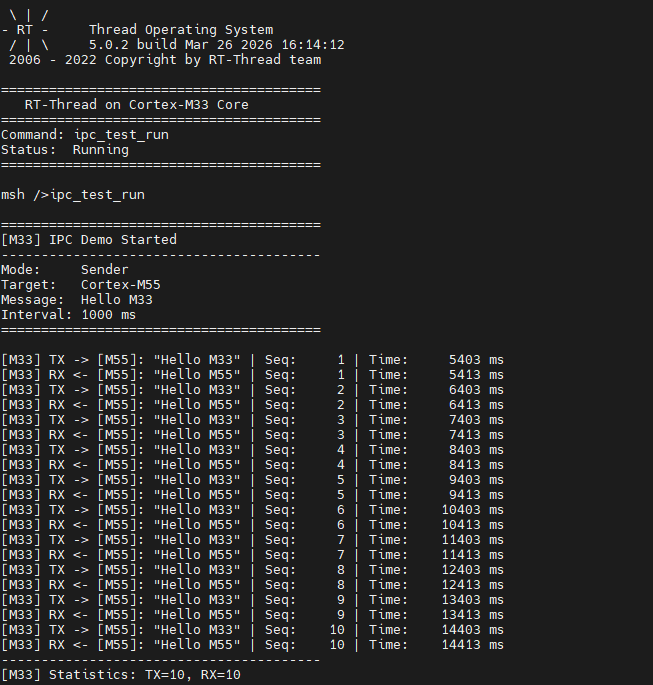
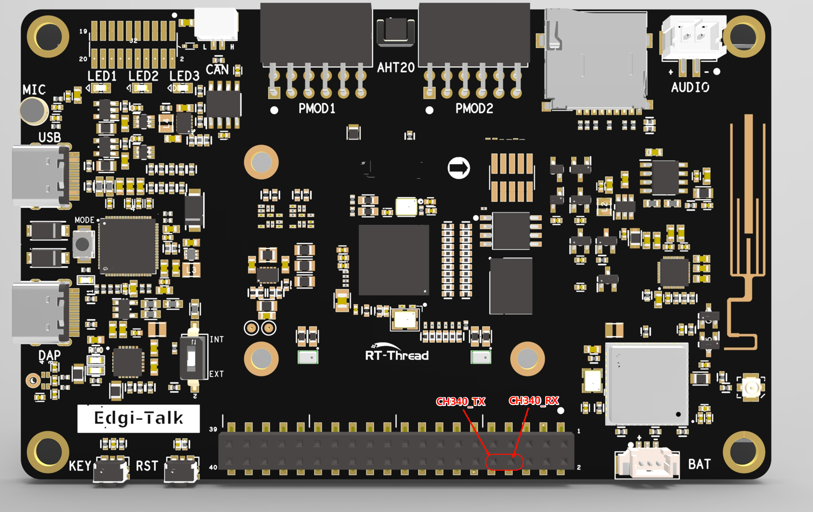

Edgi_Talk_M33_IPC 双核通信示例工程
中文 | English
简介
本工程在 Edgi-Talk M33 核心上实现 IPC（Inter-Processor Communication） 双核通信功能，演示了 Cortex-M33 与 Cortex-M55 之间的消息传递机制。
M33 作为发送端，定期向 M55 发送 “Hello M33” 消息，并接收 M55 的 “Hello M55” 回复。
默认配置
通信频率：1000ms
消息格式：ASCII 编码的文本消息
使用 Infineon PSoC E84 片内 IPC Pipe 硬件
编译与下载
使用 RT-Thread Studio 或 SCons 编译工程。
通过 KitProg3 (DAP) 下载固件到 M33 核心。
同时需要编译并下载 M55 工程才能完成双核通信。
连接串口查看通信日志，输出如下如图：

注意事项
⚠️ 注意： 本工程要求使用 RT-Thread Studio 2.2.9 或以上版本。
串口连接
本工程使用 UART5 作为调试串口，需要外接 CH340 USB 转串口模块：
串口: UART5
波特率: 115200
数据位: 8
停止位: 1
校验位: None
CH340 模块连接
请按以下方式连接 CH340 模块到开发板：
连接位置示意图：

⚠️ 重要提示：
TX 和 RX 需要交叉连接（CH340 的 TX 接开发板的 RX）
确保两个设备的 GND 共地
如需运行 M55 工程，建议先烧写 Edgi_Talk_M33_Template。该工程是干净的 M33 工程，适合作为 M55 启动前的基础固件。
使用方法
1. 配置和编译
在 RT-Thread Studio 中打开：
RT-Thread Settings -> Hardware Drivers Config -> On-chip Peripheral Drivers
勾选 Enable IPC 选项。
2. 运行示例
第一步：启动 M55 接收端
在 M55 的串口终端输入：
msh> ipc_test_run
M55 将进入监听模式，等待来自 M33 的消息。
第二步：启动 M33 发送端
在 M33 的串口终端输入：
msh> ipc_test_run
M33 将开始每秒发送 “Hello M33” 消息，并接收 M55 的 “Hello M55” 回复。
3. 观察输出
M33 输出示例：
========================================
[M33] IPC Demo Started
----------------------------------------
Mode: Sender
Target: Cortex-M55
Message: Hello M33
Interval: 1000 ms
========================================
[M33] TX -> [M55]: "Hello M33" | Seq: 1 | Time: 1234 ms
[M33] RX <- [M55]: "Hello M55" | Seq: 1 | Time: 1256 ms
[M33] TX -> [M55]: "Hello M33" | Seq: 2 | Time: 2234 ms
[M33] RX <- [M55]: "Hello M55" | Seq: 2 | Time: 2256 ms
----------------------------------------
[M33] Statistics: TX=10, RX=10
----------------------------------------
M55 输出示例：
========================================
[M55] IPC Listener Running
----------------------------------------
Mode: Receiver & Responder
Peer: Cortex-M33
Response: Hello M55
========================================
[M55] RX <- [M33]: "Hello M33" | Seq: 1 | Time: 1250 ms
[M55] TX -> [M33]: "Hello M55" | Seq: 1 | Time: 1252 ms
[M55] RX <- [M33]: "Hello M33" | Seq: 2 | Time: 2250 ms
[M55] TX -> [M33]: "Hello M55" | Seq: 2 | Time: 2252 ms
----------------------------------------
[M55] Statistics: RX=10, TX=10
----------------------------------------
数据协议
IPC 通信使用 edge_rc_frame_t 结构体：
typedef struct {
uint8_t client_id; // 客户端 ID
uint16_t intr_mask; // 中断掩码
uint8_t role; // 角色标识 (M33/M55_ECHO)
uint32_t magic; // 魔术字 (0x5243444DU)
uint32_t seq; // 序列号
uint16_t channel[8]; // 8通道数据（存储 ASCII 消息）
uint32_t checksum; // 校验和
} edge_rc_frame_t;
消息 “Hello M33” 编码方式：
channel[0] = 0x4865 /* 'He' */
channel[1] = 0x6C6C /* 'll' */
channel[2] = 0x6F20 /* 'o ' (space) */
channel[3] = 0x4D33 /* 'M3' */
channel[4] = 0x0033 /* '3' */
启动流程
M55 依赖 M33 启动流程，烧录顺序如下：
+------------------+
| Secure M33 |
| (安全内核启动) |
+------------------+
|
v
+------------------+
| M33 |
| (IPC 发送端) |
+------------------+
|
v
+-------------------+
| M55 |
| (IPC 接收端) |
+-------------------+
硬件连接
本示例使用 Infineon PSoC E84 的片内 IPC 硬件：
使用 CM0P 中的 IPC Pipe 硬件
CM33 使用 EP1 (Endpoint 1)
CM55 使用 EP2 (Endpoint 2)
使用信号量进行互斥访问
不需要外部连线
配置参数
在 libraries/HAL_Drivers/ipc_common.h 中可修改以下参数：
EDGE_IPC_FRAME_POOL_SIZE: 发送缓冲池大小（默认 64）EDGE_IPC_RX_QUEUE_SIZE: 接收队列大小（默认 128）EDGE_IPC_SEMA_RETRY_MAX: 信号量重试次数（默认 2）